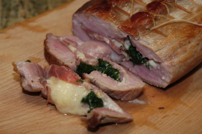

| Zutaten für 4 Personen: | |
| 2 (800g) | falsches Schweinsfilet |
| 4 lange Tranchen | Rohschinken |
| 50 g | Spinat aus dem Tiefkühler, aufgetaut |
| 40 g | Gorgonzola-Mascarpone, in Würfeln |
| 3 Scheiben | Greyerzer |
| 30 g | Baumnusskerne, grob gehackt |
| Salz | |
| Pfeffer | |
| 1 El | Bratbutter |
| 0.5 dl | Weisswein |
| 3-6 El | Noilly Prat |
| 2 dl | Vollrahm |
| eventuell | Fleischbouillon |
| 1 Prise | Cayennepfeffer |
Ofen auf 80°C vorheizen.
Schweinsfilet kalt abspülen, mit Haushaltpapier trocknen.
Der Länge nach in der Mitte so aufschneiden, dass es unten noch zusammenhält. (Wie beim Kebab-Stand das Fladenbrot.)
Filets füllen, dabei ein Filet mit Gorgonzola und das Andere mit Greyerzer belegen.
Filets mit Zahnstocher zusammenheften und mit Küchenschnur satt binden.
Das Filetpäckli rundum mit Salz und Pfeffer gut würzen.
Das Filetpäckli kurz anbraten und in die vorgewärmte Gratinform geben.
Filets im Ofen bei 80°C ca. 1h niedergaren.
Den Bratenfond mit Weisswein auflösen.
Noilly Prat zugeben und einkochen.
Vollrahm zugeben und Sauce köcheln lassen.
Die Sauce mit Fleischbouillon, einer Prise Cayennepfeffer oder Pfeffer abschmecken und sehr heiss zum Filet servieren.
Zahnstocher und Küchenschnur vom Filetpäckli entfernen.
Filet tranchieren.
Kochkurs bei Patricia Krummenacher, September 2007. Sie hat das Rezept von Christine.
Hat toll geschmeckt, RE 26.10.2007
@LINKBACK_TAG@ @WAKELOCK@